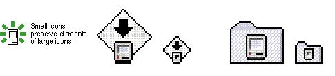
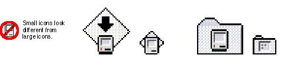

|
Small IconsIf you do not provide a 16-by-16 pixel icon, the Finder reduces the 32-by-32 pixel icon based on an algorithmic formula. The algorithm simply shrinks the icon and typically creates black areas, creating less pleasing visual results. If you provide a 16-by-16 pixel icon, however, you can optimize its design by removing pixels when necessary.When you design a small version of your 32-by-32 pixel
icon, preserve as many graphical elements of the icon as
possible. In essence you want to provide the same icon in a
smaller size. Typically you have to remove some pixels to
reduce the visual clutter. However, don't eliminate
significant elements, or the smaller version of the icon
may look different from the larger version. Figure 8-28 shows icons that a designer
carefully scaled and tuned Figure 8-28 Consistently designed small icons  After you've created the small icon, verify the accuracy and clarity of the small icon by trying to design a large icon based on its design. If the large icon you end up with based on your small icon is different from the original large icon, something is not working about your small icon. In this case, you should consider redesigning the small icon, making sure to incorporate the key graphical elements of the original large icon. In Figure 8-29 the small
icons don't match their corresponding 32-by-32 Figure 8-29 Inconsistently designed small icons  |